00_OK3568-C_Linux5.10.160+QT5.15.8用户编译手册
免责声明
本手册版权归保定飞凌嵌入式技术有限公司所有。未经本公司的书面许可，任何单位和个人无权以任何形式复制、传播、转载本手册的任何部分，违者将被追究法律责任。
保定飞凌嵌入式有限公司所提供的所有服务内容旨在协助用户加速产品的研发进度，在服务过程中所提供的任何程序、文档、测试结果、方案、支持等资料和信息，都仅供参考，用户有权不使用或自行参考修改，本公司不提供任何的完整性、可靠性等保证，若在用户使用过程中因任何原因造成的特别的、偶然的或间接的损失，本公司不承担任何责任。
概 述
本手册是为了让使用飞凌嵌入式开发板的人员能够快速了解飞凌产品的编译过程，熟悉飞凌产品的编译方式。应用程序需要在linux操作系统上先进行交叉编译，才能在开发板上运行，按照编译手册上的方法，通过实际操作，用户能够完成自己软件代码的编译。
手册会从环境搭建进行说明，环境搭建过程可能会出现一些不可预见的问题，建议初学者直接使用我们搭建好的开发环境，可以快速上手，缩短开发时间。
Linux系统通常情况下有三种安装方式：真机双系统、真机单系统、虚拟机。不同安装方式都有其优缺点，本文仅提供在虚拟机中搭建ubuntu的方法。计算机硬件要求：建议内存至少在6GB及以上，这样在给虚拟机分一部内存运行的同时（虚拟机建议2GB以上），还可以在Windows做其他操作，否则会影响到Windows的操作。
在内容上手册主要分为4个章节描述：
第一章主要是VMware的安装，选用的版本为VMware® Workstation 15 Pro15.1.0，用户在使用ubuntu开发环境之前要先安装VMware 。
第二章主要是加载飞凌提供的ubuntu开发环境的方法，开发环境为64位ubuntu20.04。
第三章主要是搭建新的ubuntu开发环境的方法。本节选用的64位ubuntu20.04为例，描述了ubuntu的创建，由于电脑配置不同，搭建过程可能会出现预料之外的问题，建议初学者直接使用我们搭建好的环境。
第四章主要是开发板相关源码编译方法。
本手册中一些符号及格式的相关说明：
表现形式 |
含义 |
|---|---|
⁉️ |
注意或者是需要特别关注的信息，一定要仔细阅读 |
📚 |
对测试章节做的相关说明 |
🛤️ |
表示相关路径 |
蓝色字体 |
指在命令行输入的命令，需要手动输入 |
黑色字体 |
输入命令后的串口输出信息 |
黑色加粗 |
串口输出信息中的关键信息 |
// |
对输入指令或输出信息的解释内容 |
用户名@主机名 |
root@ok3568 ：开发板串口登录账户信息， |
例：打包文件系统后，使用ls查看生成文件的操作
forlinx@ubuntu:~/3568$ ls //列出该目录下的文件
OK3568_Linux_fs OK3568_Linux_fs.tar.bz2.00 OK3568_Linux_fs.tar.bz2.01 OK3568_Linux_fs.tar.bz2.02 OK3568_Linux_fs.tar.bz2.03
forlinx@ubuntu：用户名为forlinx，主机名为ubuntu，表示在开发环境ubuntu中进行操作。
// ：对操作指令的解释说明内容，不需要输入
ls：灰底蓝色字体，表示需要手动输入的相关命令
OK3568_Linux_fs：底黑色字体为输入命令后的输出信息，加粗字体为关键信息，此处为打包后的文件系统。
更新记录
日期 |
手册版本 |
更新记录 |
|---|---|---|
2023.10.21 |
V1.0 |
OK3568用户编译手册第一版； |
2023.12.11 |
V1.1 |
更新单独编译buildroot 的指令 |
2024.03.01 |
V1.2 |
修复手册内路径问题 |
01_VMware虚拟机软件安装
本章主要介绍VMware虚拟机的安装，以VMware workstation 15 Pro v15.1.0为例展示操作系统的安装配置过程。
1.1 VMware软件的下载与购买
登陆VMware官网https://www.vmware.com/cn.html下载Workstation Pro并获取产品密匙。VMware是付费软件，需要自行购买，或者使用VMware提供的试用版本。
等待下载完成后双击启动文件启动安装程序。
1.2 VMware软件的安装
双击启动程序进入安装向导。

点击“下一步”。

勾选我接受许可协议中的条款，点击“下一步”。
修改安装位置，装到自己电脑安装软件的分区，点击“下一步”。

勾选，点击“下一步”。
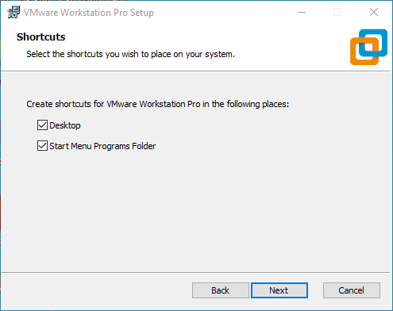
勾选添加快捷方式，点击“下一步”。
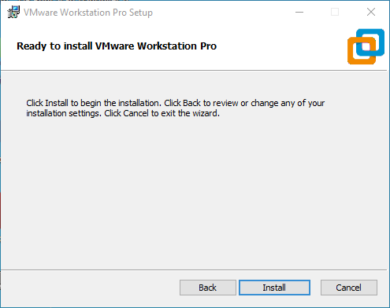
点击“安装”。

等待安装完成。
点击完成后可进行试用。若用户需要长期使用，需要到官方购买，填写许可证。
02_加载已有ubuntu开发环境
⁉️注意：
建议初学者直接使用飞凌搭建好的虚拟机环境。了解完该章节后可以直接跳转到编译章节。
提供开发环境的账户为：forlinx，密码为：forlinx
在VMware下使用虚拟机的环境有两种方式，一种是直接加载已有的环境，另一种是新建一个环境，我们先来说说如何加载一个已经存在的环境。
首先，下载飞凌提供的开发环境，开发环境资料中有MD5校验文件，用户下载完开发环境资料，先对开发环境压缩包进行MD5校验（MD5校验可以在网络上选择MD5在线工具校验，也可以下载MD5校验工具进行校验，可根据实际情况选择），查看校验码和校验文件中校验码是否一致，若一致则下载文件正常；若不一致，则文件可能有破损，需要重新下载。
选中压缩包一起解压

解压完成后选中.vmx为虚拟机要打开的文件。
打开虚拟机，选择解压出来的3588开发环境.vmx
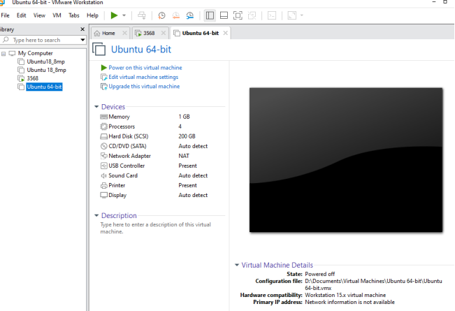
加载完成后点击开启此虚拟机，即可运行，进入系统的界面。

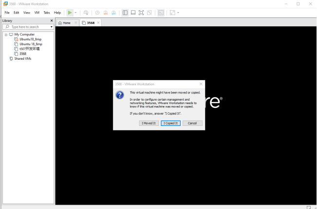
提供开发环境的账户为forlinx，密码为forlinx，填好密码后选择Sign in登录。


03_搭建新的ubuntu开发环境
⁉️注意：初学者不建议自己搭建系统，建议使用已有虚拟机环境，不需要搭建环境的此节可以跳过本章节主要讲解了ubuntu系统的搭建过程。
3.1 ubuntu系统搭建
3.1.1 创建ubuntu虚拟机
打开VMware软件，点击创建新的虚拟机。进入以下界面：

选择自定义，点击“下一步”。

选择对应VMware版本的兼容性，版本可在帮助->关于VMware Workstation中查看，点击“下一步”。
选择稍后安装操作系统，点击“下一步”。

保持默认，点击“下一步”。

修改虚拟机名称及安装位置，点击“下一步”。

按照实际情况设置处理器数量。

同样按照实际情况设置内存大小，建议使用16G。

设置网络类型，默认为NAT模式，点击下一步。后面的步骤保持默认值，直到指定磁盘容量步骤。

IO控制器类型这里默认选择LSI就可以：

这里同样是默认选择SCSI。

这里选择创建新的虚拟磁盘：

设置磁盘大小为200G，并选择磁盘的存在形式，然后点击“下一步”完成。

指定磁盘文件，这里默认即可。

默认点击“完成”即可。
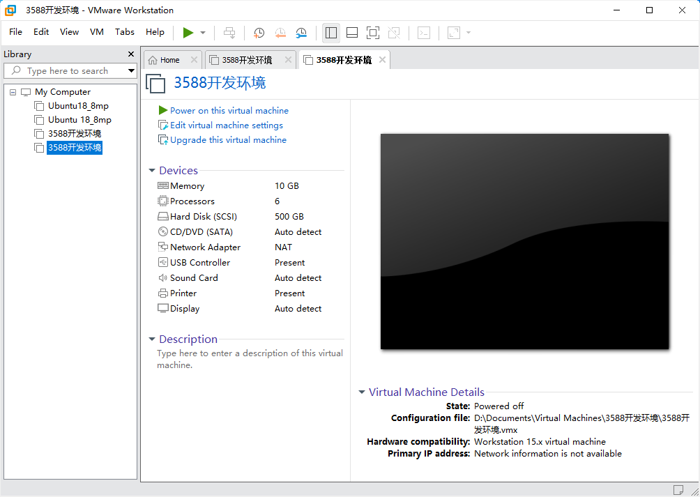
至此，虚拟机创建完成。
下一小节中我们介绍Ubuntu系统在虚拟机中的安装，其在真机中的安装方法与虚拟机类似。这里我们介绍在虚拟机中安装Ubuntu系统的方法。
3.1.2 系统安装
我们选择安装的Ubuntu 版本是20.04，首先去Ubuntu官网获取Ubuntu20.04 64位镜像，下载地址为：http://sources.ubuntu.com/20.04/下载“ubuntu-20.04.6-desktop-amd64.iso”这个版本。
右击刚创建完成的Ubuntu64位 在弹出菜单中选择设置：

弹出“虚拟机设置菜单”根据如下图：

点击CD/DVD（SATA），选择使用ISO映像文件，浏览选择前面下载的Ubuntu镜像，然后确定。
设置好镜像后，保证网络可用，然后开启虚拟机，进行Ubuntu镜像的安装。

开启虚拟机后，等待出现安装界面如下：

如图左侧选择语言后,点击“Install Ubuntu”后弹出选择语言界面。Ubuntu默认语言是英文的，当然，也可以选择中文，默认选择的语言在后期也是可以重新设置的，选择完成后continue。

接下来，默认选择continue继续安装，安装过程会很慢，然后点击“continue”：

默认，点击Install Now，会弹出下图，点击“continue”即可。


接下来选择时区，这里点击上海时区或输入Shanghai即可（不同时区根据实际情况选择即可），点击“继续”。最后设置用户名和密码，点击“continue”就会自动安装：

安装过程下图，网络不好可以Skip跳过，不影响安装。

安装完成后显示如下图，点击“Restart Now”重启（或者点击“重新启动客户机”）：


重启完成登录后系统界面如下图：
3.1.3 Ubuntu的基本配置
安装好Ubuntu20.04操作系统后，要进行一些配置。
VMware Tools安装：
接下来安装VMware Tools，如果不安装该工具，在Windows主机和虚拟机之间无法使用复制粘贴、文件拖拽。首先点击VMware 导航栏上的“虚拟机”，然后在下拉框中点击“安装VMware Tools”：
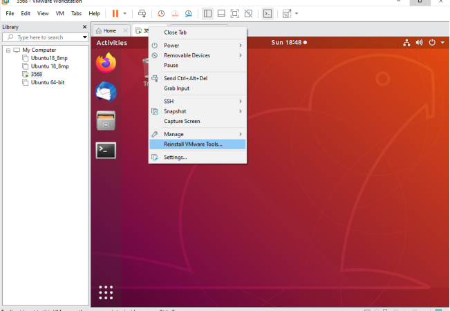
完成后进入Ubuntu，桌面会出现VMware Tools的光盘图标，点击进入其中：

双击VMwareTools图标，进入后看到一个压缩文件VMwareTools-10.3.10-12406962.tar.gz（不同的虚拟机版本可能会不同），

复制文件到主目录下面（即home 个人用户名的目录下）：

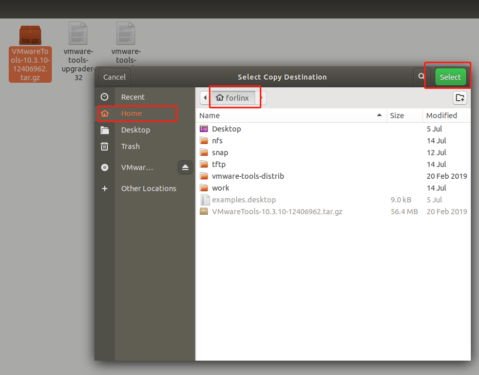
按键盘【Ctrl+Alt+T】调出终端命令界面，使用tar命令对VMwareTools安装包解压（使用sudo命令会提示输入密码，根据提示直接输入密码回车即可，Linux系统密码输入无回显，确保输入的密码正确后按回车确认即可）：
forlinx@ubuntu:~$ sudo tar -xvf VMwareTools-10.3.10-12406962.tar.gz
[sudo] password for forlinx:
执行完解压命令后，使用ls查看，会出现一个vmware-tools-distrib的文件目录， 进入到该目录
forlinx@ubuntu:~$ ls
Desktop examples.desktop nfs snap tftp VMwareTools-10.3.10-12406962.tar.gz vmware-tools-distrib work
forlinx@ubuntu:~$ cd vmware-tools-distrib/ //使用cd命令进入该目录
forlinx@ubuntu:~/vmware-tools-distrib$ ls //查看该目录下的文件
bin caf doc etc FILES INSTALL installer lib vgauth vmware-install.pl
在当前目录下，输入sudo ./vmware-install.pl，进行安装，回车后输入密码，然后就开始安装，遇到[yes]/[no]就输入yes，其他一律回车默认安装就可以。
forlinx@ubuntu:~/vmware-tools-distrib$ sudo ./vmware-install.pl
[sudo] password for forlinx: //输入forlinx账户的密码，无回显，无法看到输入内容
安装过程信息较长，此处省略
open-vm-tools packages are available from the OS vendor and VMware recommends
using open-vm-tools packages. See http://kb.vmware.com/kb/2073803 for more
information.
Do you still want to proceed with this installation? [no] yes //输入yes
... ...
VMware tools工具完成后，可以实现Windows和Ubuntu之间的文件复制粘贴，虚拟机自适应全显等功能。如果虚拟机不能够全屏显示，可以通过点击查看，选择自动调整大小，点击自动适应客户机，即可实现虚拟的全屏问题，VMware tools安装成功。

基本设置：
在下图位置进行大部分的系统设置。Ubuntu上很多设置的需求都可以在这里完成。

3.1.4 Ubuntu的网络设置
NAT模式
在使用网络前，先确保我们的虚拟机能连接互联网，打开虚拟机设置，网络适配器中的网络桥接模式改为“NAT模式”：
在虚拟机中，VMware虚拟网卡设置为NAT模式时，Ubuntu环境中网络设置为动态IP即可。在这种模式下虚拟NAT设备和主机网卡相连通。这是我们虚拟机上外网最常用的方式。


网络设置为动态ip。

桥接模式：
如果在使用TFTP，SFTP等服务器时则需要设置虚拟机的网络联系方式为桥接方式。VMware虚拟网卡设置为桥接模式时，主机网卡和虚拟机网卡通过虚拟网桥进行通信，需要将Ubuntu的IP与主机IP设置在同一个网段。


设置静态ip，此时Ubuntu的IP与主机IP需设置在同一个网段。

⁉️注意：网络设置部分涉及到的IP以及DNS请按照用户自身的实际环境来设置，手册为举例说明。
3.1.5 U盘的加载
打开虚拟机设置，USB控制器，在兼容性里面选择USB3.0，然后确定。如下图，因为目前大多数电脑都支持USB3.0的接口，如果不设置，当我们插入USB3.0接口，是不能连接到虚拟机的。如下图：
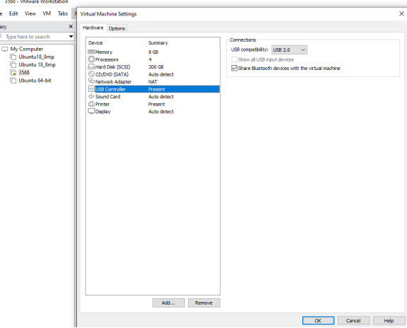
虚拟机启动后，插入U盘，虚拟机右下角会多出一个类似“U盘”的图标，右击–>连接即可，然后就可以在文件系统看到多一个目录，说明U盘加载成功，如图：

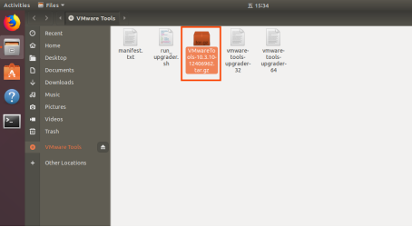
3.1.6 虚拟机基本库安装
在进行开发之前，还需要一些其他的必要库，我们使用以下命令逐一安装，安装前需保证网络可正常使用，能上外网：
forlinx@ubuntu:~$ sudo apt-get update //更新下载源信息
forlinx@ubuntu:~$ sudo apt-get install build-essential //提供编译程序必须软件包的列表信息
forlinx@ubuntu:~$ sudo apt-get install libncurses* //用于生成基于文本的用户界面
forlinx@ubuntu:~$ sudo apt-get install lzop //基于Lzo库的压缩解压工具
forlinx@ubuntu:~$ sudo apt-get install net-tools //网络配置工具
3.1.7 编译OK3568 Linux源码必要库安装
forlinx@ubuntu:~$ sudo apt-get update //更新apt-get下载源
forlinx@ubuntu:~$ sudo apt-get install openssh-server vim git fakeroot //必备工具包的安装
forlinx@ubuntu:~$ sudo apt-get install repo git ssh make gcc libssl-dev liblz4-tool expect g++ patchelf chrpath gawk texinfo chrpath diffstat binfmt-support qemu-user-static live-build bison flex fakeroot cmake gcc-multilib g++-multilib unzip device-tree-compiler python-pip libncurses5-dev
forlinx@ubuntu:~$ sudo apt-get install libgmp-dev libmpc-dev libicu-dev bsdmainutils
这些库文件是自行搭建3568 Linux编译环境时，准备编译Linux源码需要下载的库文件，若不是搭建OK3568 Linux开发环境，可跳过此步骤。
3.1.8 增大交换分区
请确认当前系统 swap 分区大小，若 swap 分区不足会造成编译源码失败，推荐 16G。开发环境内存建议调整到 16G。
1、 查看 swap 分区情况：
forlinx@ubuntu:~$ cat /proc/swaps
飞凌提供的虚拟机默认已经配置好 swap 分区，如果您使用其它虚拟机，可通过创建 swap 文件的方式来增加 swap 分区大小：
forlinx@ubuntu:~$ sudo swapoff /swapfile
forlinx@ubuntu:~$ sudo fallocate -l 10G /swapfile
forlinx@ubuntu:~$ sudo chmod 600 /swapfile
forlinx@ubuntu:~$ sudo mkswap /swapfile
forlinx@ubuntu:~$ sudo swapon /swapfile
forlinx@ubuntu:~$ sudo vim /etc/fstab
在 /etc/fstab 文件最后添加如下内容：
forlinx@ubuntu:~$ /swapfile none swap sw 0 0
2、建议调整开发环境内存至 16G，内存低可能导致编译不通过。

3.2 Qt Creator安装
将qt-creator-opensource-linux-x86_64-4.7.0.run拷贝至当前用户家目录下的任意目录下，执行下面命令。
路径：OK3568-C（Linux）用户资料\Linux\源码\qt-creator-opensource-linux-x86_64-4.7.0.run
forlinx@ubuntu:~$ ./qt-creator-opensource-linux-x86_64-4.7.0.run

然后会弹出图形界面的安装窗口，按照提示进行安装：
 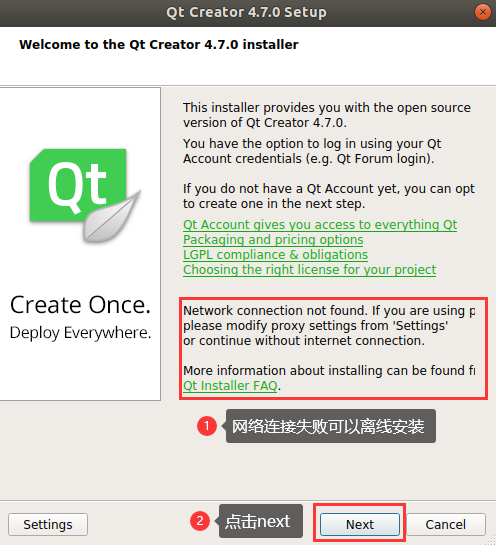
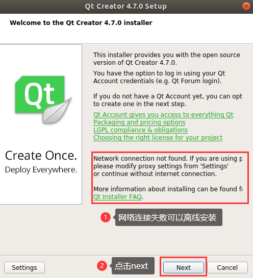


在线安装的用户需要自己注册测Qt账户，已有Qt账户的直接登录即可，Qt密码要求为：包含大写字母、小写字母、数字，注册登陆成功后，点击next。
离线安装的用户点击跳过即可。

点击next

用户可根据自己习惯设置安装路径，这边直接默认，点击next

完全安装，点击next
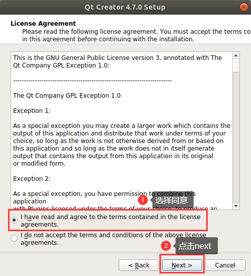

点击install，等待安装完成。
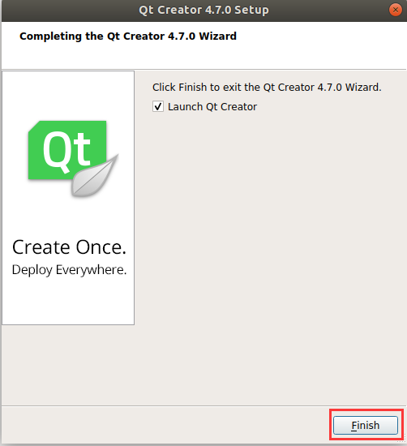
安装完成，点击finish。这时将自动打开Qt界面，也可以通过命令行启动，执行以下命令，以后台方式打开Qt Creator，用户打开时以自己实际安装路径为准：
forlinx@ubuntu:~$ cd /home/forlinx/qtcreator-4.7.0/bin
forlinx@ubuntu:~$ ./qtcreator &

出现Qt Creator工具界面。Qt Creator安装完毕。
04_相关代码编译
本章节主要描述开发板相关源码的编译方法，包括内核源码编译、应用程序编译方法。
4.1编译前准备
4.1.1 环境说明
开发环境操作系统：Ubuntu22.04 64位版
交叉工具链：aarch64-linux-gnu
开发板使用Bootloader 版本：u-boot-2017.09
开发板内核版本：linux-5.10.160
开发板移植QT版本：qt5.15.8
4.1.2 拷贝源码
程序源码：用户资料\Linux\源码\ OK3568_Linux_fs.tar.bz2.0*
创建工作目录
forlinx@ubuntu:~$ mkdir -p /home/forlinx/3568 //按照顺序创建工作目录
将用户资料中的源码文件OK3568_Linux_fs.tar.bz2.0*拷贝到虚拟机/home/forlinx/3568目录。
forlinx@ubuntu:~$ cd /home/forlinx/3568 //切换到工作目录
forlinx@ubuntu:~/3568$ cat OK3568_Linux_fs.tar.bz2.0* > OK3568_Linux_fs.tar.bz2
forlinx@ubuntu:~/3568$ tar -xvf OK3568_Linux_fs.tar.bz2 //在当然位置解压压缩包
运行命令后等待完成即可。
工具包路径：OK3568-Linux5.10.160-用户资料\Linux\源码\dl.tar.bz2
编译buildroot时会根据配置从官网上下载工具包，将用户资料中的dl.tar.bz2下载解压到buildroot目录中，可以减少编译时间。
4.2 内核编译
⁉️注意：
初次解压内核源码后，需要先对源码进行整体编译
整体编译过后，可根据实际情况再进行单独编译
该源码编译需要开发环境运行内存16G及以上，请不要修改我们提供的VM虚拟机镜像配置
为缩短首次编译时间，默认全编译直接使用编译好的文件系统镜像，未重新制作文件系统。
4.2.1 全编译测试
在终端切换到解压出来的源码路径：
forlinx@ubuntu:~$ cd /home/forlinx/3568/OK3568_Linux_fs
以下操作需要在源码目录下操作，第一遍编译需要指定使用的chip：
forlinx@ubuntu: ~/3568/OK3568_Linux_fs$./build.sh chip
/*执行后会有选项输入，如下：*/
Log saved at /home/forlinx/work/3568/OK3568_Linux_fs/output/sessions/2023-10-21_16-45-26
Pick a chip:
1. OK3568
2. rk3566_rk3568
3. rk3588
Which would you like? [1]: 1 /*输入1后按回车继续。*/
Switching to defconfig: /home/forlinx/work/3568/OK3568_Linux_fs/device/rockchip/.chip/OK3568-C-linux_defconfig
make: Entering directory '/home/forlinx/work/3568/OK3568_Linux_fs/device/rockchip/common'
#
# configuration written to /home/forlinx/work/3568/OK3568_Linux_fs/output/.config
#
make: Leaving directory '/home/forlinx/work/3568/OK3568_Linux_fs/device/rockchip/common'
之后可进行编译。默认采用的linuxfs 下的文件系统，直接打包的。如果需要重新编译buildroot，需要按单独编译部分单独编译。
forlinx@forlinx-ubuntu:~/work/3568/OK3568_Linux_fs$ ./build.sh
最终的编译效果如下图，（根据实际情况，路径可能会有不同）：

编译成功后，将在OK3568_Linux_fs/rockdev文件夹下生成对应编译工程结果文件，找到其中的镜像文件。

⁉️注意：update.img为打包好用于OTG或者TF卡完全烧写用，其它文件为分步烧写使用。
⁉️注意：3568 5.10SDK中放置了一套提前编译完成的文件系统，在OK3568_Linux_fs/linuxfs目录下，直接执行全编译脚本时会将linuxfs/rootfs.img 拷贝buildroot/output/OK3568/images目录下直接生成编译文件系统的结果以此缩短首次编译生成update.img的时间。需要编译文件系统时，需单独编译，编译完成后会将生成的rootfs.img替换linuxfs/rootfs.img文件，后续执行build.sh仍然使用linuxfs/rootfs.img文件。
4.2.2 单独编译测试
进行单独编译前需进行过全编译，在内核源码路径下进行操作。
单独编译buildroot 之前，需要将OK3568_Linux_fs/buildroot/package/forlinx/flapp/Config.in
和OK3568_Linux_fs/buildroot/package/forlinx/flapp/flapp.mk如下修改：
OK3568_Linux_fs/buildroot/package/forlinx/flapp/Config.in中将depends on BR2_PACKAGE_DWKEYBOARD 去掉并保存退出。
OK3568_Linux_fs/buildroot/package/forlinx/flapp/flapp.mk 中将FLAPP_DEPENDENCIES的参数中去掉DWKeyboard 保存退出。
forlinx@ubuntu: ~/3568/OK3568_Linux_fs$./build.sh uboot //单独编译uboot
//生成uboot.img，生成路径为/OK3568_Linux_fs/u-boot/uboot.img
forlinx@ubuntu: ~/3568/OK3568_Linux_fs$./build.sh kernel //单独编译内核
//生成boot.img，生成路径为/OK3568_Linux_fs/kernel/boot.img
forlinx@ubuntu: ~/3568/OK3568_Linux_fs$./build.sh buildroot //单独编译buildroot文件系统
//生成rootfs.ext2，生成路径为/OK3568_Linux_fs/buildroot/output/OK3568/image/rootfs.ext2路径下
//注意3568 5.10 SDK 中在linuxfs目录下内置了出厂的rootfs.img，单独编译buildroot会将其覆盖，若对出厂文件系统有回滚要求的用户，执行单独编译文件系统前，请备份。
//重新编译制作文件系统时间较长，一般为4~6小时若没有报错退出的信息，请耐心等待。
forlinx@ubuntu: ~/3568/OK3568_Linux_fs$./build.sh recovery //单独编译recovery文件系统
//生成rootfs.cpio.gz，生成路径为/OK3568_Linux_fs/output/recovery/ rootfs.cpio.gz
forlinx@ubuntu: ~/3568/OK3568_Linux_fs$./build.sh updateimg //单独生成update.img
//使用上述路径的uboot.img、boot.img、rootfs.ext2 生成update.img 路径为 rockdev/update.img
编译成功后update.img里的内核不更新。请分步烧写/OK3568_Linux_fs/kernel/boot.img文件，分步烧写步骤请参考 用户使用手册 “6.1.3 OTG分步烧写测试”章节。
注意：用户图形界面配置修改过内核配置后，例如增加usb转串口ch340驱动，执行./build.sh kernel，烧写boot.img镜像，启动开发板后发现图形配置未生效，可以使用其中一个方法解决：
方法1：直接将配置写到内核默认配置文件/OK3568_Linux_fs/kernel/arch/arm64/configs/OK3568-C-
linux_defconfig中：
CONFIG_USB_SERIAL_CH341=y
forlinx@ubuntu: ~/3568/OK3568_Linux_fs$ ./build.sh kernel
方法2：图形化配置内核，注释掉源码device/rockchip/common/scripts/mk-kernel.sh下图命令，如下图。

编辑kernel/ Makefile文件

forlinx@ubuntu: ~/3568/OK3568_Linux_fs/kernel$ make ARCH=arm64 menuconfig
用户根据需求配置内核，将配置写到.config文件后，保存退出。
forlinx@ubuntu: ~/3568/OK3568_Linux_fs$ ./build.sh kernel
⁉️注意：用户图形界面配置修改过buildroot配置后，例如增加python3支持，执行./build.sh buildroot，烧写rootfs.ext2镜像，启动开发板后发现图形配置未生效，可以使用其中一个方法解决：
方法1：直接将配置写到buildroot默认配置文件/OK3568_Linux_fs/buildroot/configs/OK3568_defconfig中：
BR2_PACKAGE_PYTHON3=y
BR2_PACKAGE_PYTHON3_PY_PYC=y
forlinx@ubuntu: ~/3568/OK3568_Linux_fs$ ./build.sh buildroot
编译过程中弹出以下提示：
Found old config, override it? (y/n):y选择y，表示覆盖之前的.config文件。
方法2：图形化配置buildroot，注释掉device/rockchip/common/scripts/mk-buildroot.sh中下图位置：

forlinx@ubuntu: ~/3568/OK3568_Linux_fs/buildroot/output/OK3568$ make menuconfig
用户根据需求配置buildroot，将配置写到.config文件后，保存退出。
forlinx@ubuntu: ~/3568/OK3568_Linux_fs$ ./build.sh buildroot
Tips：如单独编译文件系统，并单独烧写后，发现显示界面中程序并没有正确添加，在显示界面中点击无法正确打开，可将源码目录下，buildroot/configs/OK3568_defconfig 中，BR2_PACKAGE_DWKEYBOARD=n 配置项修改为y，重新编译即可恢复正常。
4.2.3 交叉编译链位置
驱动编译链的源码路径：
OK3568-linux-sdk5.10/prebuilts/gcc/linux-x86/aarch64/gcc-arm-10.3-2021.07-x86_64-aarch64-none-linux-gnu/bin/aarch64-none-linux-gnu-
文件系统应用（QT等）编译链的源码路径：
OK3568-linux-sdk5.10/buildroot/output/OK3568/host/bin/aarch64-linux-
以上路径是已经执行过./build.sh buildroot后的编译链生成位置，如果您使用预置host.tar.bz2的方式来编译整包则在编译完后再在以上路径解开host.tar.bz2即可获得编译链**。**
4.3 Image文件的使用
update.img为打包好用于OTG或者TF卡完全烧写用，其它文件为分步烧写使用。单独编译生成的Image文件不会在update.img文件中更新，需使用单步烧写来烧录（详见用户使用手册OTG烧写）。
4.4 Qt Creator环境配置
Qt是跨平台的图形开发库，支持众多操作系统，在进行编译前需要对Qt Creator的编译环境进行配置。
4.4.1 交叉编译器配置
⁉️注意：Qt Creator所用的交叉编译器所在路径需全编译源码后生成，为了使用方便，我们在/OK3568-C（Linux）用户资料/工具目录下放置了host.tar.bz2压缩包，可以查看其中/host/bin/qt.conf文件中记录的HostPrefix路径，然后使用我们的开发环境创建绝对路径和HostPrefix记录一致即可 将host.tar.bz2解压到对应的绝对路径后，继续本章节的操作。强烈建议全编译源码后再进行本章节操作。
1、点击Qt Creator 的Tools ->Options->Kits->Compilers， 然后点击Add ->GCC->C；
2、Name输入GCC；
3、Compiler Path点击Browse 选择交叉编译器的路径为：aarch64-linux-gcc和aarch64-linux-g++，如下图所示：
🛤️路径：OK3568_Linux_fs/buildroot/output/OK3568/host/bin
⁉️注意：buildroot下output目录需要源码经过全编译后才可生成。

4、按照同样的方法添加GCC编译器，点击右侧“Add->GCC->C++”，如图所示：

4.4.2 Qt Versions 配置
1、点击Qt Creator 的Tools ->Options->Qt Versions，
2、然后点击Add，弹出对话框选择OK3568_Linux_fs/buildroot/output/OK3568/host/bin/qmake
3、点击open添加。

4、然后会返回 Qt Version配置框，Version name可以自行更改。
5、然后点击Apply及OK。
4.4.3 Kits 配置
Kits是一个构建套件，用来构建和选择开发编译环境，对于有多种QT库的项目很有用。将之前添加的交叉编译器和QT Version添加到Kits中，构建适合开发板的编译环境。
1、点击Qt Creator 的Tools ->Options->Kits， 然后点击Add，出现配置部分。
2、Name自行更改。
3、Compiler选择GCC。
4、Qt version选择Qt version创建时输入的名字。

5、然后点击Apply及OK。
4.5 应用程序编译及运行
4.5.1 编译并运行命令行应用
本小节使用看门狗测试程序，默认程序拷贝到/home/forlinx/3568目录。
1、使用cd命令进入/home/forlinx/work目录
forlinx@ubuntu:~$ cd /home/forlinx/3568/OK3568_Linux_fs/app/forlinx/forlinx_cmd/fltest_watchdog
2、添加交叉编译器路径，使用make进行交叉编译
forlinx@ubuntu: ~/3568/OK3568_Linux_fs/app/forlinx/forlinx_cmd/fltest_watchdog$ export PATH=/home/forlinx/3568/OK3568_Linux_fs/buildroot/output/OK3568/host/bin/:$PATH
forlinx@ubuntu: ~/3568/OK3568_Linux_fs/app/forlinx/forlinx_cmd/fltest_watchdog$ make
aarch64-linux-gcc watchdog.c -o fltest_watchdog
generate fltest_watchdog success!!!
用file命令查看生成的文件信息
forlinx@ubuntu:~/3568/OK3568_Linux_fs/app/forlinx/forlinx_cmd/fltest_watchdog$
file fltest_watchdog
fltest_watchdog: ELF 64-bit LSB executable, ARM aarch64, version 1 (SYSV), dynamically linked, interpreter /lib/ld-linux-aarch64.so.1, for GNU/Linux 3.7.0, not stripped
通过结果可以看到编译生成的是64位、ARM的文件。
3、将编译生成的fltest_watchdog通过U盘或者ftp等方式拷贝到板子上，比如/forlinx路径下，下述以tf卡为例，拷贝到开发板，运行测试。
[root@ok3568:/]# cp /run/media/mmcblk1p1/fltest_watchdog /home/forlinx
[root@ok3568:/]# cd /home/forlinx
[root@ok3568:/home/forlinx]# ./fltest_watchdog
Watchdog Ticking Away!
4、参考用户使用手册“看门狗测试”章节测试。
4.5.2 编译并运行QT应用程序
在开发环境打开Qt Creator（用户根据自己的实际路径打开），点击Qt Creator 的File->Open File or Project，弹出窗口，选择/3568/OK3568_Linux_fs/app/forlinx/forlinx_qt/watchdog/watchdog.pro
打开项目后界面如下：（若没有自动改变页面，请按照截图所示选择）。
点击Configure Project后将适配本手册《Qt Creator环境配置》章节中构建的编译环境。
选择后界面如下：

点击Build->Clean All进行清空。（如果没有清除中间文件可以手动删除）。
点击Projects 取消选中Shadow build。

然后点击Build->Build All进行编译。

右下角Build进度条走完之后代表编译完成，此时在路径/app/forlinx/forlinx_qt/watchdog目录下会看到新生成的二进制文件fltest_qt_watchdog，如下：

将编译生成的可执行文件通过U盘或者ftp等方式拷贝到板子上，拷贝到开发板，运行测试即可。